Lesson11
Query Optimization
Introduction
- 等价表达式：利用关系代数重写查询以提高效率
- 操作算法选择：为每种数据库操作选择合适的算法
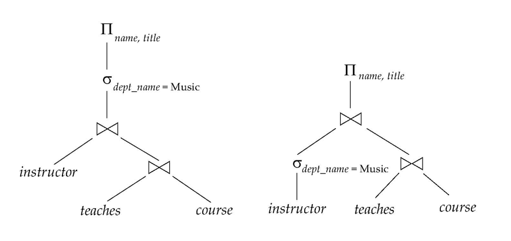
-
基于成本的查询优化步骤
- 使用等价规则生成逻辑等价的表达式
- 为每个表达式分配具体的执行算法和操作顺序，以此形成不同的执行计划
- 根据估计成本(estimated cost)选择最便宜的计划
-
估计成本基于：
-
关系的统计信息，例如元组数量、属性的唯一值数量
- 中间结果的统计估算
- 计算复杂表达式的成本
- 算法的成本公式，使用统计信息计算
Transformation of Relational Expressions
两个关系代数表达式被认为是等价的，如果它们在任何合法的数据库实例上生成的元组集合相同。
我们关心的是内容的一致性，并不一定要求顺序。
Equivalence Rules
- 连接选择操作可以分解成一系列单独的选择操作
- 选择操作是交换律的
- 在一系列投影操作中，只需要最后一个，其他的可以省略
- 选择操作可以与笛卡尔积和\(θ\)连接结合使用
- \(θ\)连接操作（和自然连接）是交换律的
- 自然连接操作是结合律的：6a \((E_1 \, \bowtie \, E_2) \, \bowtie \, E_3 = E_1 \, \bowtie \, (E_2 \, \bowtie \, E_3)\)
- \(θ\)连接是以下方式的结合律： 6b \((E_1 \, \bowtie_{\theta_1} \, E_2) \, \bowtie_{\theta_2 \land \theta_3} \, E_3 = E_1 \, \bowtie_{\theta_1 \land \theta_3} \, (E_2 \, \bowtie_{\theta_2} \, E_3)\) 其中，\(\theta_2\) 只涉及 \(E_2\) 和 \(E_3\) 的属性。
-
选择操作在θ连接操作上分配满足以下两种条件：
-
当 \(\theta_0\) 中的所有属性仅涉及其中一个连接表达式（\(E_1\)）的属性时。
$\sigma_{\theta_0}(E_1 \, \theta \, E_2) = (\sigma_{\theta_0}(E_1)) \, \theta \, E_2$ -
当 \(\theta_1\) 只涉及 \(E_1\) 的属性，且 \(\theta_2\) 只涉及 \(E_2\) 的属性时。
$\sigma_{\theta_1 \land \theta_2}(E_1 \, \theta \, E_2) = (\sigma_{\theta_1}(E_1)) \, \theta \, (\sigma_{\theta_2}(E_2))$
（选择操作的分配律：先连接后选择 = 先选择后连接） + 先连后投=►先投后连

-
一些关于交并的：
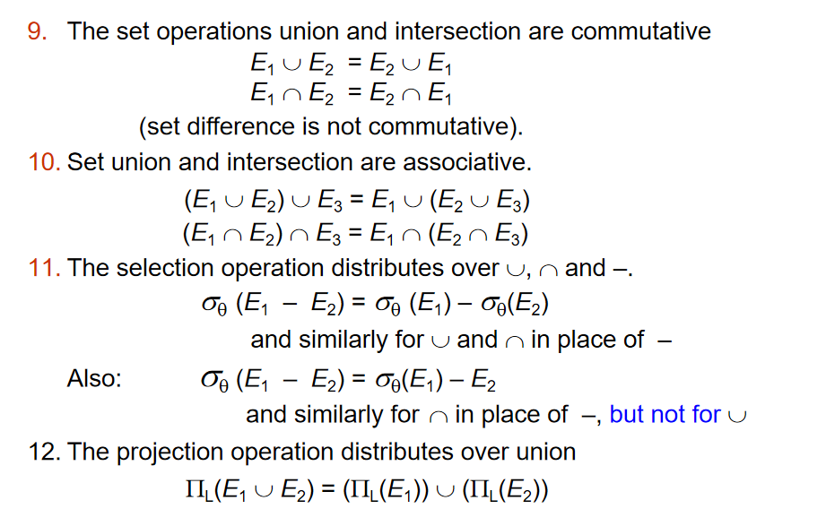
可能11的also不能瞬间理解，这是因为选择过后的
-和选择前的-处理的列其实是一样的。但是\(\cup\)不一样，so not for union。
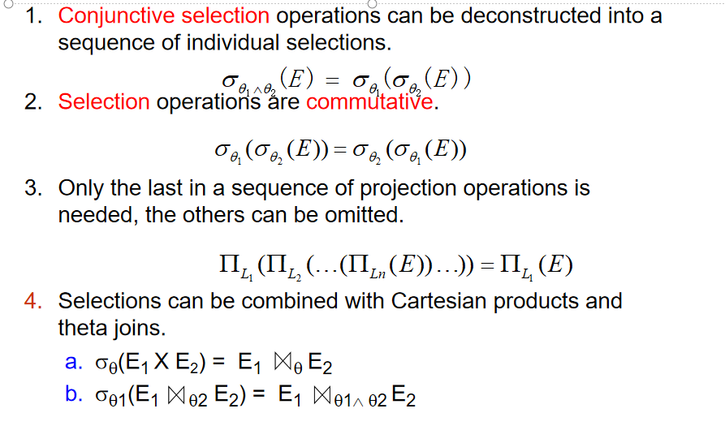
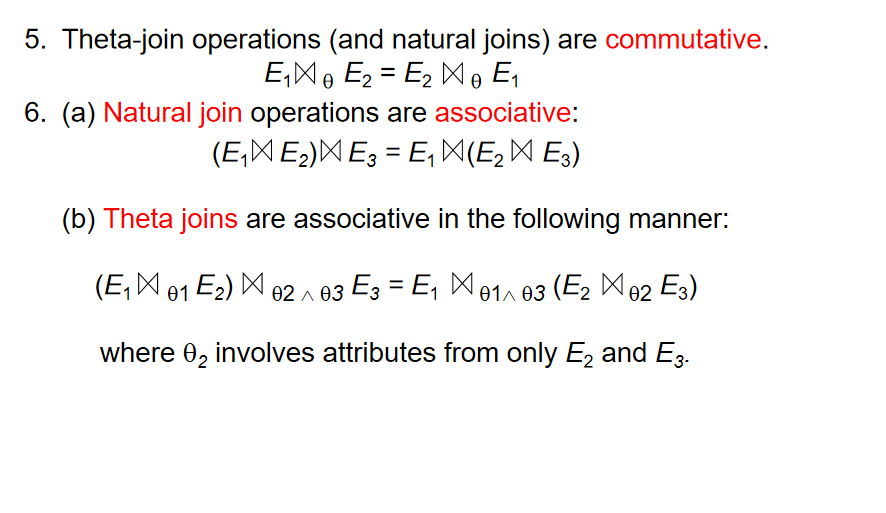
转换成图：
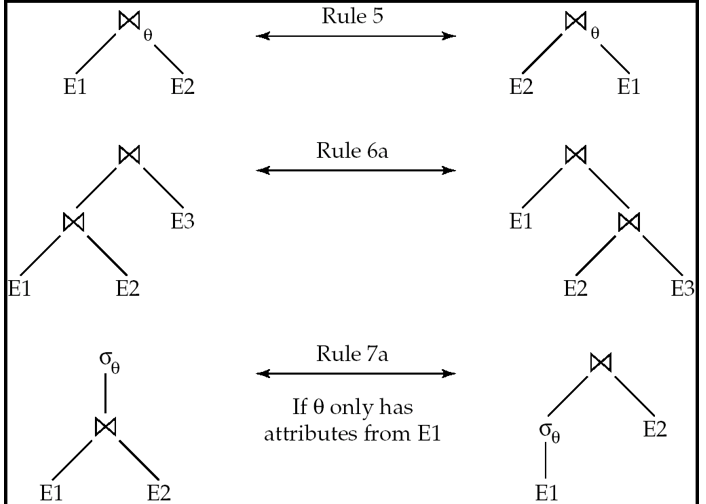
第二个类似红黑树的旋转感觉。
举例子环节：
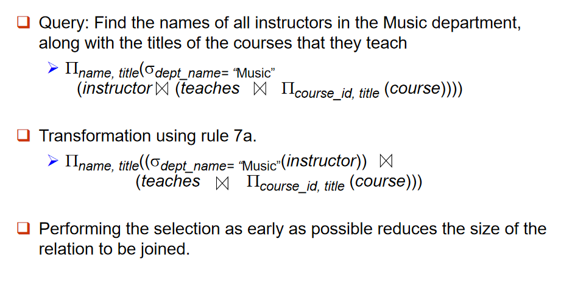
规则7a：选择操作可以分配到连接的某一方，前提是选择条件只涉及其中一边的属性。
转换过程:因为dept_name仅是instructor的属性，所以可以先选择再投影。
举例子2：
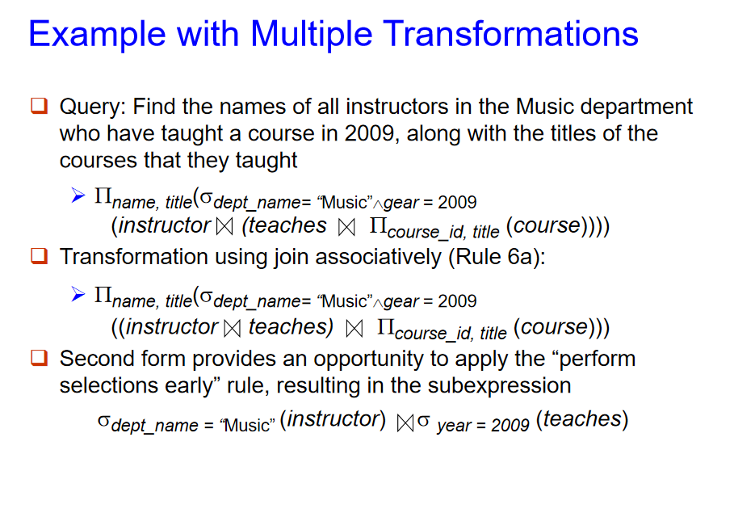
6a: 连接操作是结合律的。
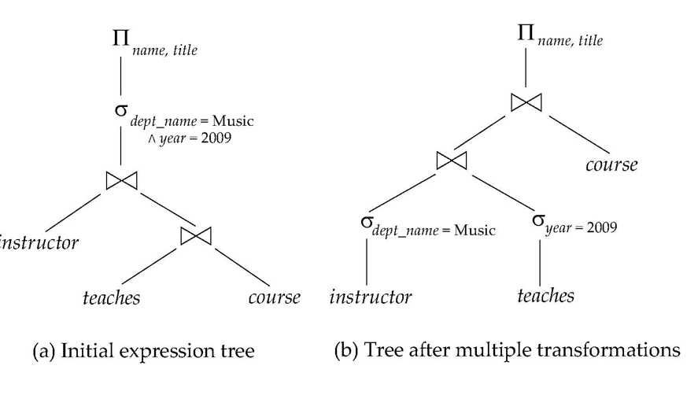
新的一个例子：
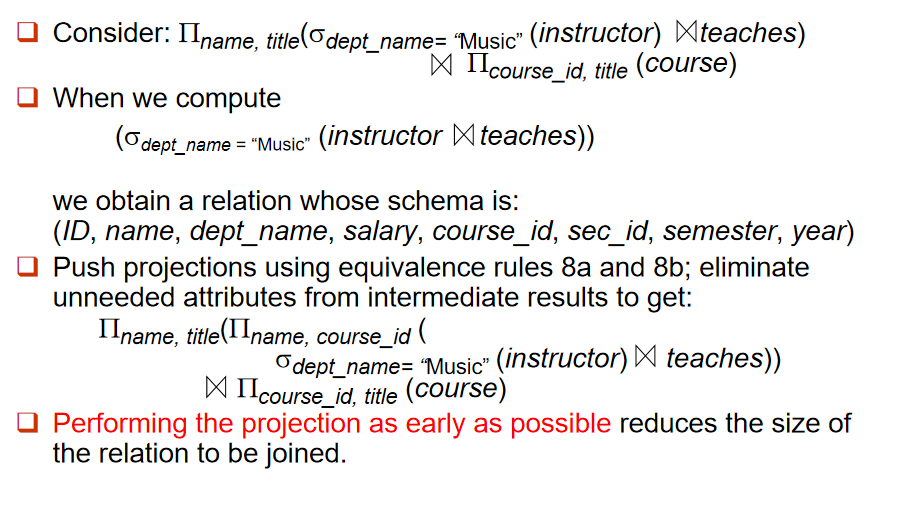
注意到直接执行这个先连接再选择的操作，我们得到的元组的属性有很多不必要的，因此我们可以利用8a 8b提前投影出需要的属性(这里是name与title)，其他的属性就美美切割了。
以及连接的顺序很重要，重要在中间结果的大小，好比小连接中连接大，正确的顺序是先小连接中再连接大，如果中先连接大再连接小，中间结果会很大，导致性能下降。
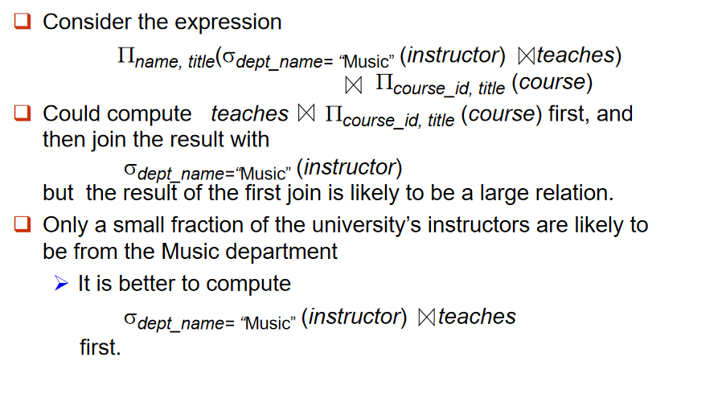
Enumeration of Equivalent Expressions
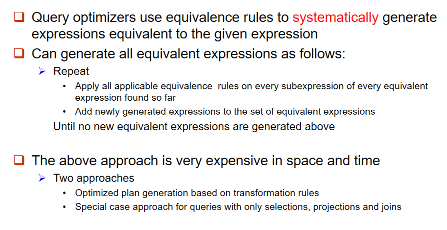
Statistics for Cost Estimation
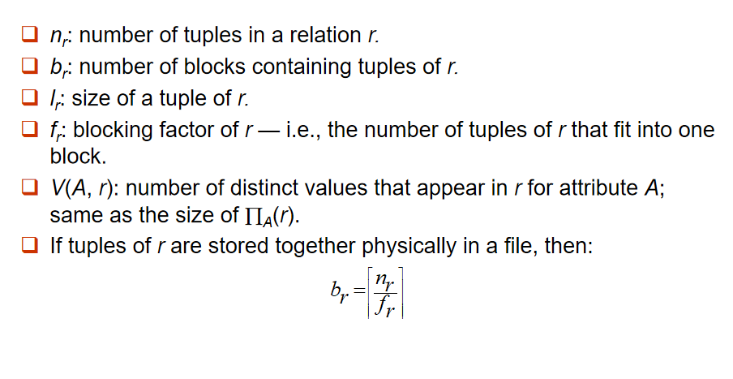
- \(n_r\): 关系 r 中元组的数量。
- \(b_r\): 包含关系 r 元组的块（block）数量。
- \(l_r\): 关系 r 中一个元组的大小。
- \(f_r\): 关系 r 的块因子（blocking factor），即一个块中可以容纳的关系 r 的元组数量。
-
\(V(A, r)\): 关系 r 中属性 A 的不同值数量，等同于投影操作 \(∏_A(r)\) 的大小。
-
\(σ_{A=v}(r)\)：
- 对于一般的键：\(\frac{n_r}{V(A,r)}\)
- 对于主键：1
-
\(σ_{A≤v}(r)\)：
-
0，如果\(v<min(A,r)\)
- \(\frac{n_r * (v-min(A,r))}{max(A,r) - min(A,r)}\)：其实就是线性的一个结果
- \(n_r\)，如果\(v>max(A,r)\)
- 选择性的定义：对于属性 A 和条件\(\theta_i\)，选择性定义为：\(\frac{s_i}{n_r}\)，其中\(s_i\) 是满足条件 \(θ_i\) 的元组数量
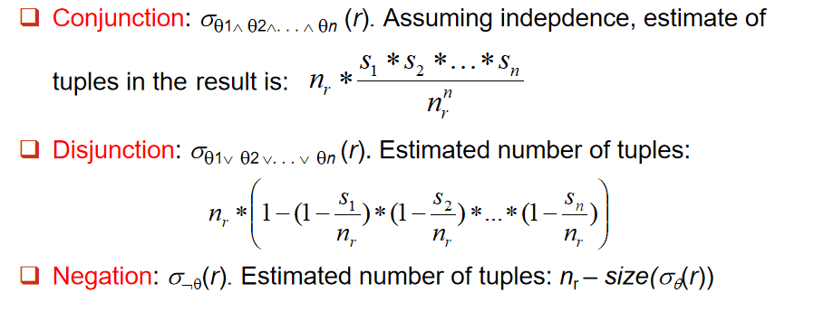
Estimation of the Size of Joins
- 笛卡尔积的大小：\(n_{r1} * n_{r2}\)，列长度：\(s_{r1} + s_{r2}\)
-
我们可以讨论一下连接与笛卡尔积的关系：
- 两个元组交集为空，那其实两个操作就是一样的，至少对于结果
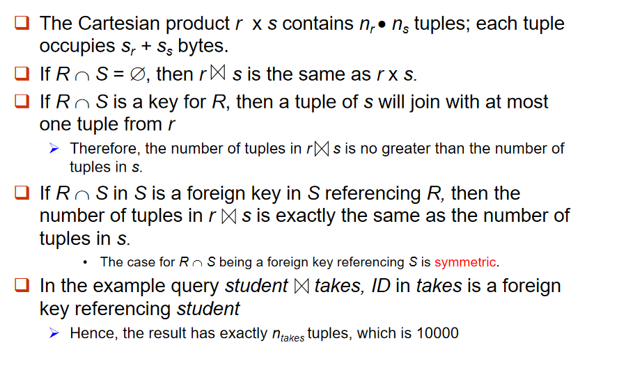
-
假设 R ∩ S 中的属性 A 不是关系 R 或关系 S 的主键，那么每个元组 t 在关系 R 中可能会与多个元组 s 在关系 S 中匹配，反之亦然：
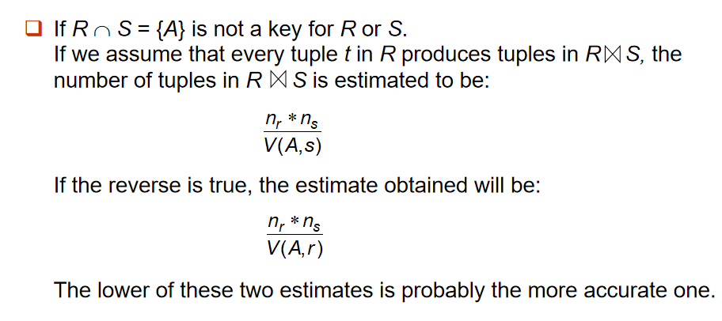
一个example:
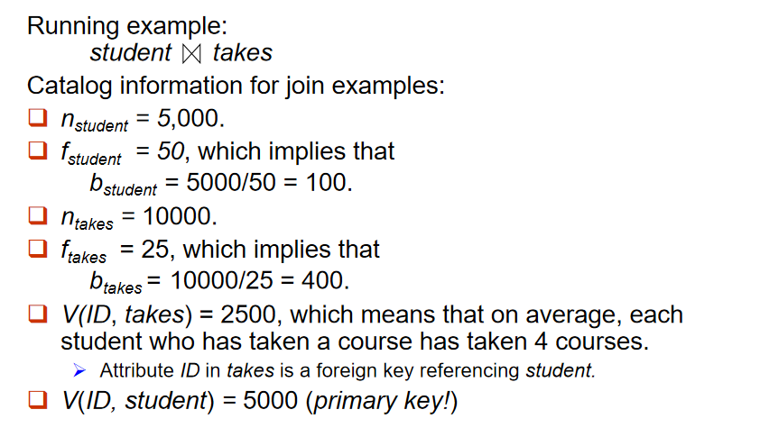
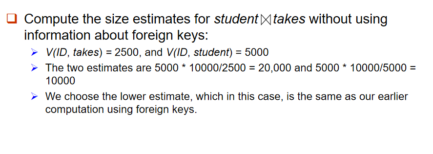
与之前使用外键时的计算结果相同。
Size Estimation for Other Operations
-
outer join：
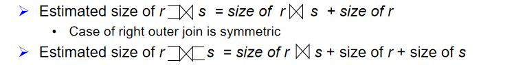 + 对于并交减：
- 并：估计是\(sizeog(r) + sizeof(s)\)
- 交：估计是\(min(size(r), size(s))\)
- 减：估计是\(size(r)\)
- 都不准确，只是提供了一个上限
- 投影与聚合：\(V(A,r)\)
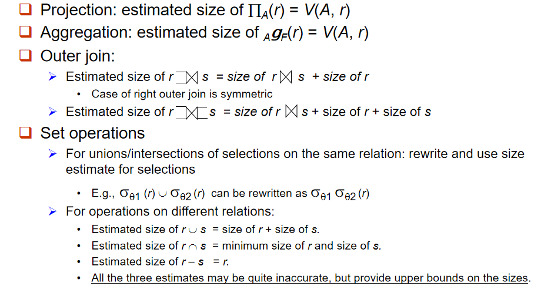
\(\sigma_{\theta}(r)\)
- 如果 \(\theta\) 强制 A 取指定的值：
\(V(A, \sigma_{\theta}(r)) = 1\) 例如：A = 3。
- 如果 \(\theta\) 强制 A 取指定的多个值之一：
\(V(A, \sigma_{\theta}(r)) = \text{指定值的数量}\) 例如：\((A = 1 \vee A = 3 \vee A = 4)\)
- 如果选择条件 \(\theta\) 的形式为 A op r：
估算 \(V(A, \sigma_{\theta}(r)) = V(A.r) \times s\) 其中，s 是选择的选择性（selectivity）。
- 在其他所有情况下：
使用近似估算： \(\min(V(A, r), n_{\sigma_{\theta}}(r))\)
-
连接操作：
-
如果所有在A的属性来自同一个关系 r：
\(V(A, r⋈s) = min(V(A,r), n_{r⋈s})\) + 如果A中，A1和A2分别来自关系 r 和 s：
\(V(A, r⋈s) = min(V(A1, r)*V(A2 – A1, s), V(A1 – A2, r)*V(A2, s), n_{r⋈s})\) + 对于 \(\text{min}(A)\) 和 \(\text{max}(A)\)，可以通过以下方式估算不同值的数量：
-
$$ \min(V(A, r), V(G, r)) $$
其中，G 表示分组属性。
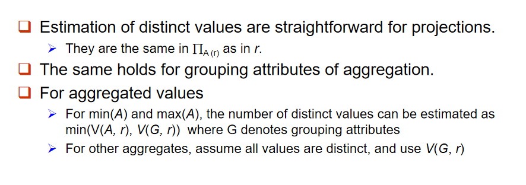